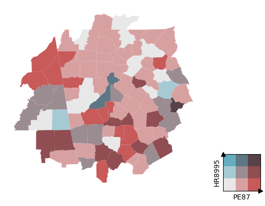
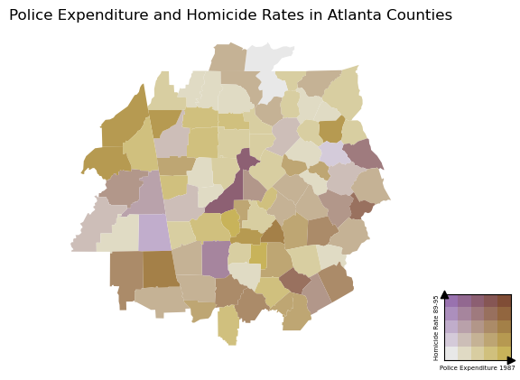

gp = BivariateGridPalette.from_dropdown()bivariate_choropleth
Plotting Bivariate Choropleths with
geopandas.
Usage
Installation
Install latest from the GitHub repository:
$ pip install git+https://github.com/Parkes2/bivariate_choropleth.gitor from conda
$ conda install -c Parkes2 bivariate_choroplethor from pypi
$ pip install bivariate-choroplethDocumentation
Documentation can be found hosted on this GitHub repository’s pages. Additionally you can find package manager specific guidelines on conda and pypi respectively.
How to use
Choose a palette for your legend
default GridPalette is a 3x3 grid with the blues2reds palette.
Use GridPalette.from_dropdown to get an interactive widget with the premade palettes. See nbs/01_grid_palette for more options for selecting grid palettes
An example using a geodatasets dataset
import geodatasetsgeodatasets.data.geoda.atlanta.url'https://geodacenter.github.io/data-and-lab//data/atlanta_hom.zip'bivariate_choropleth.shapefiles has some functions for using
from bivariate_choropleth.shapefiles import *use download_and_unzip to download from the url above. The directory and filename are entered as separate arguments
download_and_unzip(r"https://geodacenter.github.io/data-and-lab//data/",'atlanta_hom.zip')atlanta_hom.zip already exists, do you want to overwrite y/n? ncalling load_gdf() with no arguments will show a list of folders in the location of SHAPE_FILES_PATH (User/Documents/SHP_FILES)
load_gdf()Available shapefiles are: atlanta_hom atlanta_hom LSOA_2021_BOUNDARIES_V4 ca_state ca_counties ca_placesatlanta = load_gdf('atlanta_hom')from bivariate_choropleth.plotting import *call plot_bivariate_choropleth(gdf, x_col_name, y_col_name) to plot a bivariate choropleth
ax, cax = plot_bivariate_choropleth(atlanta, x='PE87', y='HR8995')
the grid_size can be changed if you want more ranks in your data.
ax, cax is returned so that the plot can be manipulated
ax, cax = plot_bivariate_choropleth(atlanta, x='PE87', y='HR8995', grid_size=5, palette_name='purple2gold')
ax.set_title('Police Expenditure and Homicide Rates in Atlanta Counties')
ax.set_axis_off()
cax.set_xlabel('Police Expenditure 1987', fontsize=5)
cax.set_ylabel('Homicide Rate 89-95', fontsize=5);